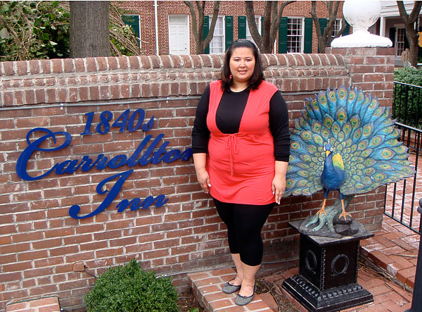
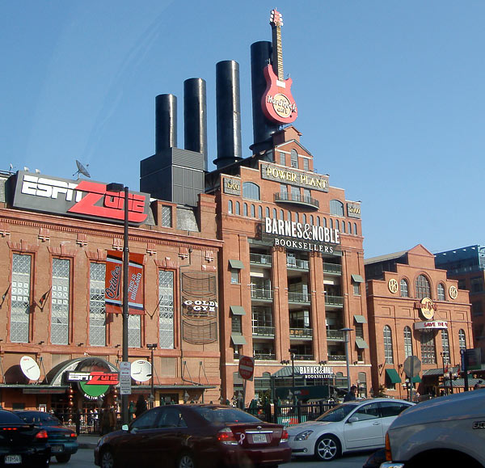
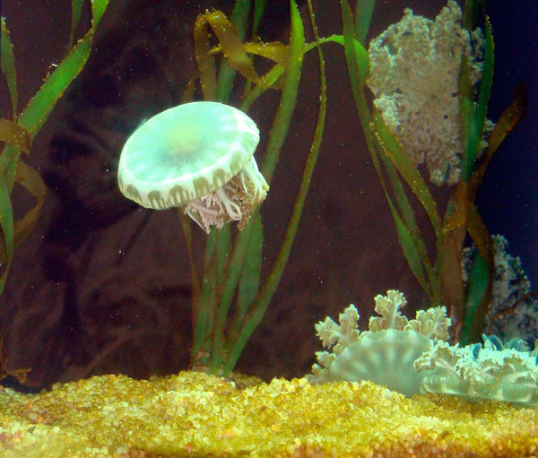
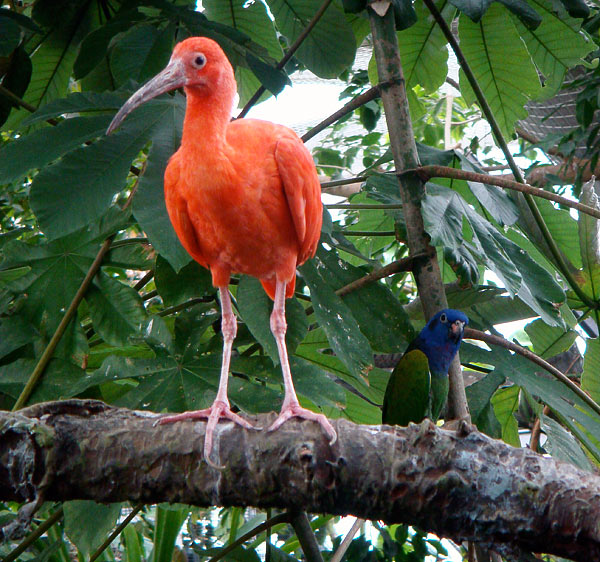
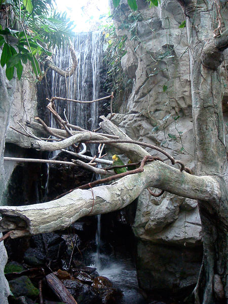
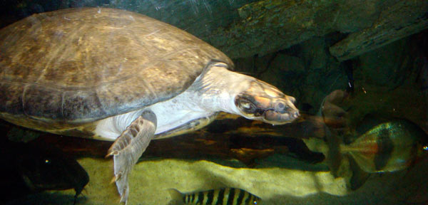
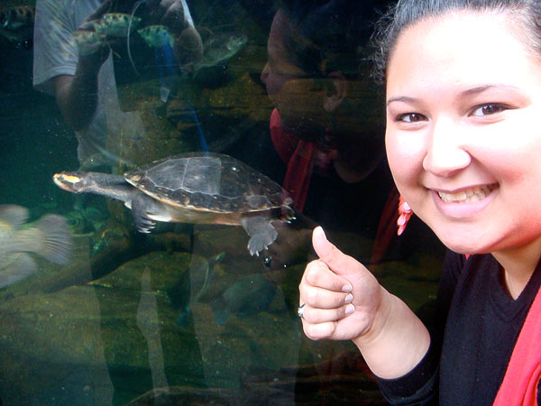

Celebrating Our 7th Anniversary in Baltimore
On March 21st, 2008, Kristina and I have been together for 7 years. Most of our anniversaries were spent apart while I was in college up in Philadelphia and Kristina was studying in Maryland. This year we wanted to mark the occasion in a special way by going to a bed and breakfast in Baltimore.

The Inn
After weeding through the several different options available we chose the 1840’s Carrollton Inn just outside of the inner harbor. We stayed in the Independence suite which has burgundy walls, French Bonaparte furnishings, and a whirlpool tub. Upon entering our suite I was in awe. Kristina was really happy with our selection too. In fact we were both so pleased with the room that we cancelled our dinner reservations at Aldo’s and ordered in from Velleggia’s.


The amenities spoiled us. Upon entering the room we were greeted with a day bed and fireplace. It wasn’t a real fireplace but it still helped set the mood. The marble bathroom featured a duck faucet that I really got a kick out of. The bedroom had a comfy king sized bed and roman shades. The next morning we were served breakfast in bed. Kristina got an omelet with Belgium waffles while I feasted on Banana pancakes with sausage. After our 11 am checkout we walked 4 blocks over to the Baltimore Aquarium.


The Aquarium
After picking up our tickets we had an hour to kill before our designated entrance time. We looked at travel books about Japan at the nearby Barnes & Nobel which is part of the old power plant building that was built in 1900.

My favorite thing about the Baltimore Aquarium is how little it has changed since I was a kid. I remember going there for my birthday with a few friends when I was 8 or 9 and many of the exhibits hadn’t changed a bit. We made our way through the fish tanks, up to the rain forest, down into the shark exhibit, and past the big sting ray pool.




We even managed to catch feeding time for the rays. Here is a clip:
The new Australian exhibit has a 35 foot waterfall, free-flying birds and bats. It was the one exhibit that wasn’t here when I was a kid. Unfortunately it was too short to be a main exhibit and we were a bit disappointed after walking through it but the turtles were cool…

All in all we had a great overnight trip. When we came home we felt renewed with a lot of great memories.

[…] after 7 years of being together, I finally popped the question to my girlfriend Kristina. I got a call from the jewelers this […]
[…] after 7 years of being together, I finally popped the question to my girlfriend Kristina. I got a call from the jewelers this […]
Wow! Awesome place! And awesome pictures! What camera is that?
Reply
I’m pretty sure they were all taken with Kristina’s camera. Except the photos of the room. I pulled those off their site.